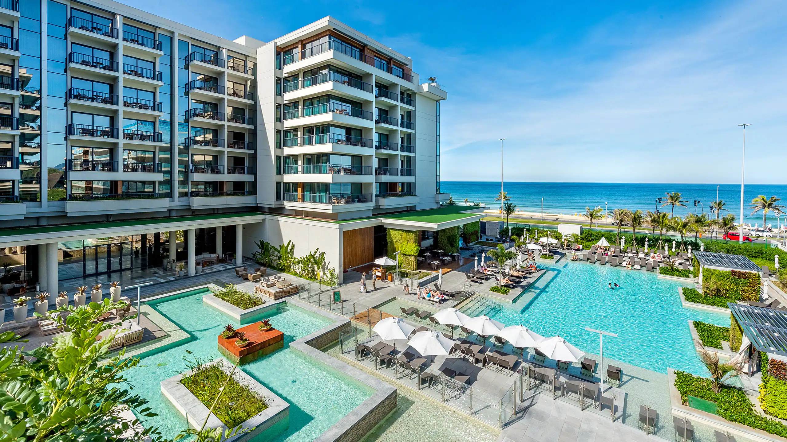
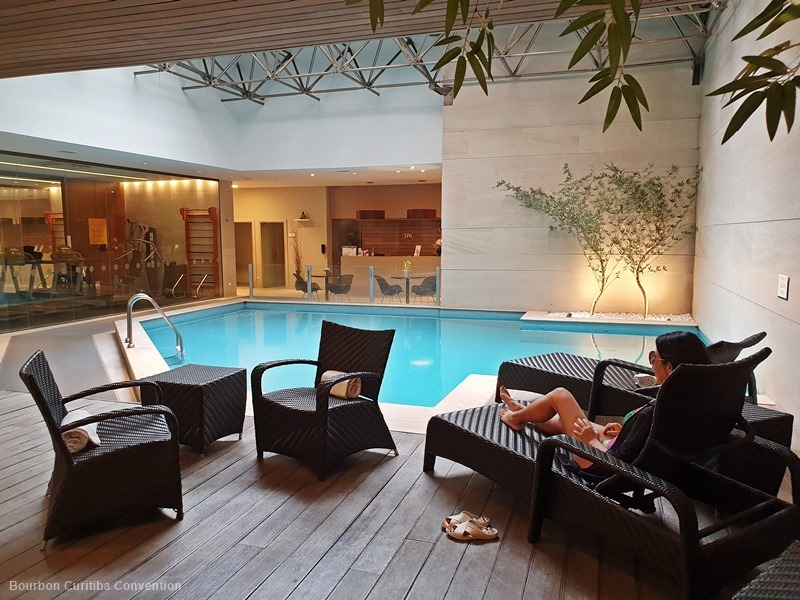

Pousadas e hotéis em Florianópolis estão instalados em diversos bairros, que costumam funcionar de forma independente. Cada bairro da cidade costuma ter seu próprio comércio, seus restaurantes, seus hotéis, praias e suas características. Pensando de forma abrangente, podemos destacar que Florianópolis tem três grandes regiões: norte, onde estão Jurerê e a Praia dos Ingleses, por exemplo; a região central, onde fica o próprio Centro, a região Beira-Mar Norte, uma importante via da cidade, e a porção sul, onde fica a Praia do Campeche. Muitos hotéis e pousadas estão instalados em diferentes praias, seja no sul, seja no norte da ilha, por isso é fundamental se informar sobre suas adjacências e saber o tipo de atmosfera que pretende encontrar ao realizar sua viagem.
A região central da cidade é muito boa para hospedagem pela diversidade de hotéis, pelos bons preços e por ter uma localização centralizada, que permite ir a diferentes regiões com facilidade. Além do Centro propriamente dito, fica bem próximo a região da Beira-Mar, com hotéis que geralmente têm uma vista bonita, além de vários restaurantes e shopping próximos. Vale lembrar que, em épocas de alta temporada, como Réveillon, Carnaval e férias, a cidade fica cheia e você deve reservar um hotel com antecedência. Para encontrar diárias mais baratas, uma alternativa interessante (principalmente para quem está de carro) é ficar na parte continental de Florianópolis ou em São José, cidade vizinha.
Saiba ainda que, por ser uma cidade turística, os hotéis no Rio de Janeiro ficam lotados na alta temporada e os preços sobem. Então não deixe para reservar hotel em cima da hora, principalmente para o carnaval e o réveillon. Se você vai ao Rio a negócios, planeja conhecer a parte histórica da cidade ou até mesmo fazer compras, uma boa opção é escolher um hotel no Centro do Rio. O bairro é bem localizado e são fartas as opções de transportes a partir dali. Além disso, o centro fica próximo do Aeroporto Santos Dumont, uma mão na roda para quem chega por esse aeroporto. O centro ainda tem a vantagem de ter hotéis econômicos — os preços ficam ainda mais baixos no fim de semana. O ponto negativo é que as ruas do centro costumam ficar vazias à noite. No Centro, indicamos os hotéis Atlântico Business Centro e Américas Granada Hotel, ambos com bom custo/benefício.
Para aproveitar as praias e ficar em uma área mais descolada da cidade, o melhor é ficar na Zona Sul, onde estão Copacabana, Leblon e Ipanema. Copacabana, por exemplo, é um dos bairros que conta com mais hotéis na cidade. O famosíssimo Copacabana Palace fica na região, um símbolo da hotelaria no país; nela também há opções mais econômicas, como o Rio Othon Palace, que tem uma vista muito bonita de sua cobertura ou o Hotel Atlântico Rio, que tem um ótimo custo para a região. sses bairros é abundante e também há restaurantes ótimos.
Para ficar perto da praia e ao mesmo tempo desfrutar de bons preços nas diárias dos hotéis, uma boa dica é ficar na Barra da Tijuca. O bairro fica distante do centro, porém, com a implementação do metrô na região, ficou mais fácil ir para outras áreas do Rio de Janeiro. A Barra é extensa, tem bons shoppings e praias geralmente mais tranquilas do que na Zona Sul. Nessa região, você pode ficar no econômico Ibis Barra da Tijuca ou Windsor Marapendi, que tem uma boa piscina e fica à beira do mar.
Grande parte dos hotéis de Curitiba está localizada no centro da cidade. A região facilita o acesso a pé a várias atrações turísticas, tem boa oferta de transporte público, é rota da Linha Turismo e oferece vários comércios, shoppings e restaurantes. Sem dúvida, é uma boa localização para quem deseja turistar por Curitiba. O ponto negativo é a segurança. O Centro de Curitiba não foge à regra nacional e é um pouco perigoso, especialmente ao anoitecer. Se optar por se hospedar na região, tenha cuidado ao retornar para o hotel à noite e prefira hospedagens próximas a lugares sempre movimentados, como os shoppings.
O Centro Histórico é colado ao centro da cidade e também oferece boas opções de hospedagem. Você estará em meio a várias atrações turísticas e belos prédios históricos. A vizinhança é animada, especialmente ao anoitecer, quando os bares abrem as portas e até colocam mesinhas na calçada, como acontece no Largo da Ordem, principal localidade do Centro Histórico. A região também é rota do Linha Turismo e tem boa oferta de transporte público.
Quem busca hospedagens próximas ao Centro e ao Centro Histórico de Curitiba encontrará bons preços. Os hotéis não têm alto padrão como os do Batel, mas oferecem conforto e qualidade aliados a tarifas interessantes. Destacamos os elegantes e espaçosos Slaviero Conceptual Rockefeller (pertinho ao Shopping Estação) e o Slaviero Conceptual Palace (ao lado da Praça General Osório); o charmoso Hotel San Juan Johnscher, que funciona em um edifício considerado Patrimônio Histórico de Curitiba e está ao lado do Centro de Convenções; o Confiance Residence, onde os quartos têm mini cozinhas e a localização é bastante central; o Slaviero Suites Curitiba, com quartos em estilo apartamento completo, ideais para os visitantes que ficarão muitos dias na cidade; o Trevi Hotel & Business e o vizinho Curitiba Palace Hotel, com quartos simples e boa tarifa, localizados próximos à Biblioteca Pública; e o Ibis Curitiba Shopping e Mercure Curitiba Golden Hotel, na fronteira entre o Centro e o Batel.
A melhor localização para se hospedar em Ouro Preto é no entorno da Praça Tiradentes. Ela é o coração do Centro Histórico e um bom ponto de referência para saber se você estará em um bom ponto da cidade. Quanto mais distante do centro, mais afastado você estará das principais atrações, restaurantes e do agito de Ouro Preto. Entretanto, se essa for a sua intenção, invista nos hotéis que estão mais à margem do Centro Histórico. Nem sempre as hospedagens do Centro Histórico têm os preços mais altos. É fácil encontrar hostels muito bem localizados e com preços excelentes. Por isso, olhe várias opções!
Um detalhe é muito importante de ser observado ao fazer uma reserva: se você estiver de carro, é fundamental perguntar ao hotel se ele possui estacionamento particular. Ouro Preto não é repleta de vagas para os carros e o barato pode sair caro. Há cobrança pelas vagas rotativas e o valor das horas de estacionamento na rua poderá ser a diferença de preço entre um hotel com ou sem garagem. Sem contar que não é muito fácil encontrar vagas nas ruas do Centro Histórico. Fique atento para não passar aperto.